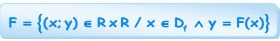
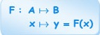
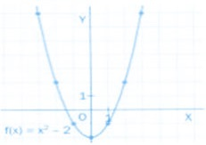
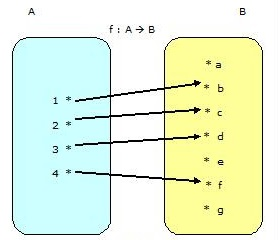
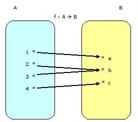
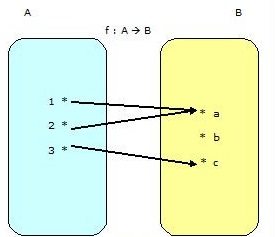

Se llama función a una relación en la cual a cada elemento del conjunto de partida
(dominio) le corresponde sólo un elemento (o imagen) del conjunto de llegada
(codominio).
Definición 2.-
• Función: es una relación tal que a cada elemento del dominio le
corresponde exactamente un elemento del rango. Es decir:

Definición de Terminos Básicos:
Es importante que definamos de manera precisa cada uno de los
siguientes términos:
• Par ordenado: es un conjunto de dos elementos considerados en un
determinado orden :
• Variable independiente: se refiere a la variable que representa a los
posibles valores del dominio.
• Variable dependiente: se refiere a la variable que representa a los
posibles valores del rango.
Notación de una Función:
Si f es una función definida en A con valores en B, que a cualquier
x A ∈
pone en correspondencia un
y ∈B
cualquiera, se simboliza por:

Donde la ecuación y = f(x) se denomina REGLA DE
CORRESPONDENCIA entre x e y, además:
A: Conjunto de partida
B: Conjunto de llegada
x: pre-imagen de y o variable independiente
y: imagen de x o variable dependiente:
Valor Númerico de una Función:
Dada la función
F : A →B / y=F(x)
Evaluar la función f significa obtener el valor de y mediante su regla de
correspondencia, luego de asignarle un cierto valor a x. Por ejemplo,
para x = a, el valor de la función llamado también IMAGEN, que le
corresponde será f(a), con lo cual se dice que el par (a; f(a)) pertenece
a la función f.
En la definición de función la variable independiente x desempeña el
papel de “marcador de posición”.
Ejemplo 2.8.1:
Por ejemplo la función:
f(x) 3x2 -2x + 5
se puede considerar como:
f(....) 3(....)2 -2(....)+5
Gráfica de una Función:
La gráfica de una función y = F(x) es el conjunto de todos los pares
ordenados (x; y), donde x pertenece al dominio de la función e y es el
valor que toma la función f en el elemento x.
Para dibujar la gráfica de una función f se hace una tabla de las
coordenadas (x; f(x)) para distintos valores de la variable x en el
dominio de la función. Después se representan todos esos puntos en el
plano cartesiano. Si la función no tiene saltos y no representa cambios
bruscos de dirección, se pueden unir todos los puntos con una línea
continua, es decir, sin levantar el lapicero del papel.
Ejemplo 2.8.2:
Se quiere dibujar la gráfica de la función f(x) = x2
– 2. Su dominio es el
conjunto de todos los números reales. Se da a continuación una tabla de
los pares (x; y) tales que y = x2– 2:
La gráfica de una función f está formada por los puntos de la forma (a;
f(a)), donde a es un punto cualquiera del eje X y f(a) se encuentra en el
eje Y.

Crecimiento y Decrecimiento de una Función
Dada una función f(x) y dos valores x = a y x = b tales que a < b:
* Si f(b) > f(a), la función es creciente entre a y b.
* Si f(b) < f(a), la función es decreciente entre a y b.
* Si f(a) = f(b), la función es constante entre a y b.
Clasificación de las Funciones:
Función Inyectiva:
Definición .-
Una función f : A--->B Se dice que una función f es inyectiva si los elementos del conjunto B (imagen)
le corresponde un solo elemento del conjunto A (pre-imagen).
Esta función es llamada inyectiva o 1 a 1. Como se muestra en la imagen.

Como se observo en la imagen como TODOS los elementos del conjunto A, tienen
diferente imagen en el conjunto B.
Función Sobreyectiva:
Una función f : A--->B Es sobreyectiva cuando en una función todo elemento del conjunto de llegada (B)
es imagen de al menos un elemento del conjunto de partida (dominio o A).
Como se muestra en la imagen.

En la imagen se observa como TODOS los elementos del conjunto B, son imagen
de los elementos del conjunto A.
Función Biyectiva:
f : A--->B . Es Biyectiva cuando todos los elementos del conjunto inicial (A)
tengan una imagen distinta en el conjunto de llegada (B) (inyectiva), y
que ademas el recorrido sea igual al conjunto de llegada (sobreyectiva)
Como se muestra en la imagen.

Función Cualquiera:
Una función f : A--->B es cualquiera si no es ni inyectiva ni sobreyectiva ni biyectiva. Como se muestra en la imagen.
